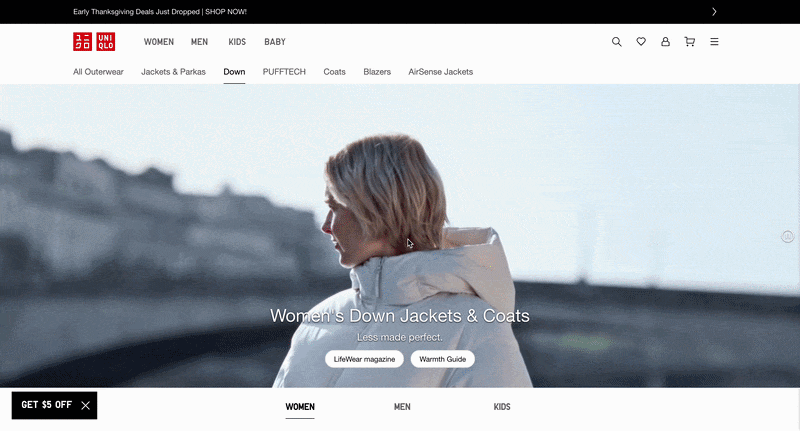
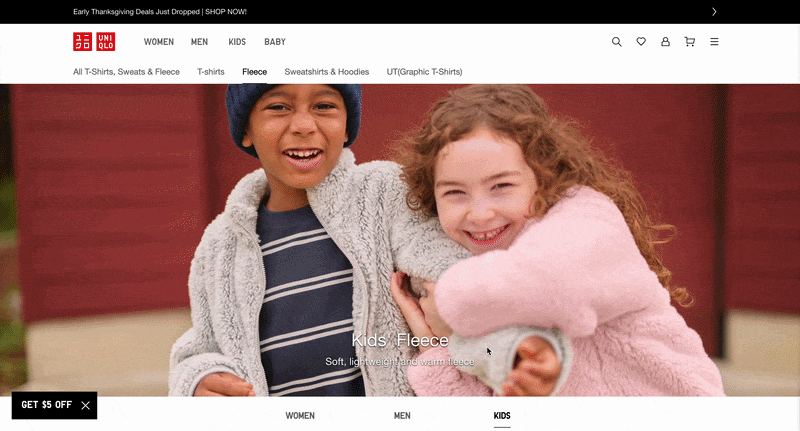
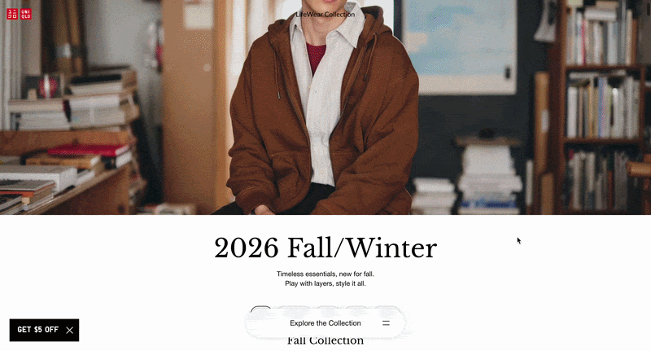
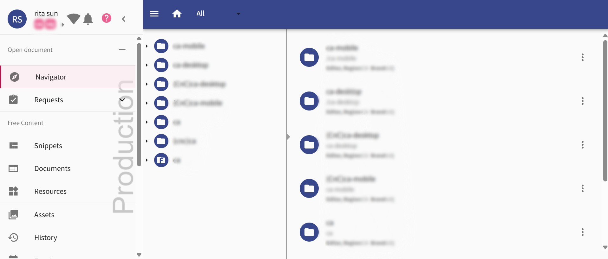
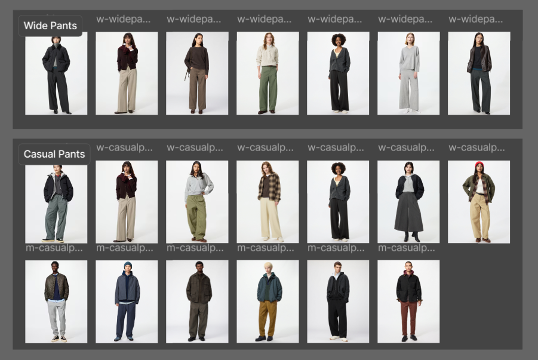
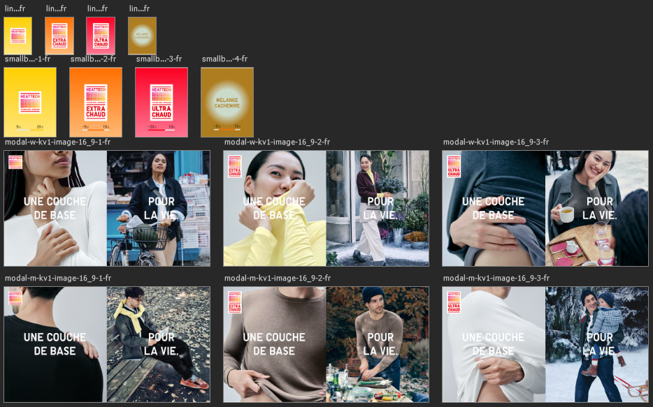

Web Operations
Creating and maintaining product pages for the Canadian UNIQLO website while supporting day-to-day web operations across local and global teams.
I created and updated English and French product pages using UNIQLO's internal CMS, working with local teams in Canada and global teams in Montreal and Japan to prepare content for release.



I worked within UNIQLO's existing CMS to create and update product pages and prepare content for release. For pages that were not component-based, I also created pages directly using HTML.

I used Figma and Photoshop to edit and prepare images and other page assets before they were added to the website.


Alongside creating pages, I supported the ongoing maintenance and operation of the website.
- Creating and updating English and French product pages
- Creating pages directly using HTML when needed
- Editing and preparing images and website assets
- Preparing content for release
- Working with local and global teams
- Updating website content through the CMS
Working on a live ecommerce website taught me how much web operations involves beyond the design itself. I learned to work within an existing system, create pages in different formats, coordinate with different teams, and make changes carefully when the website is already being used by customers.